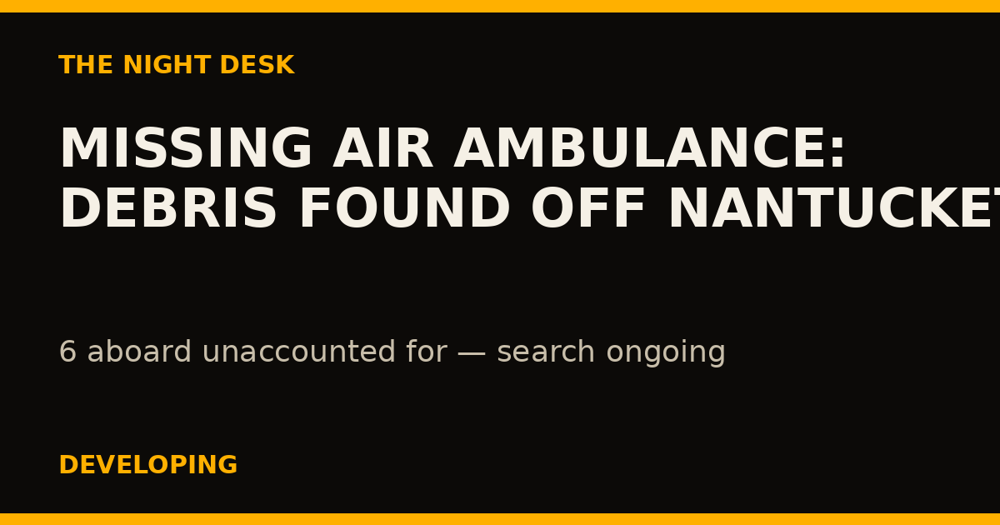
October 04, 2026
DEVELOPING: Debris Found Off Nantucket in Search for Missing Air Ambulance — 6 Unaccounted For
A Latitude Air Ambulance Gulfstream carrying six people from Bermuda to Boston vanished early Saturday after the pilot declared an electrical emergency. The Coast Guard found a debris field off Nantucket late Saturday; all six remain unaccounted for.
READ THE STORY →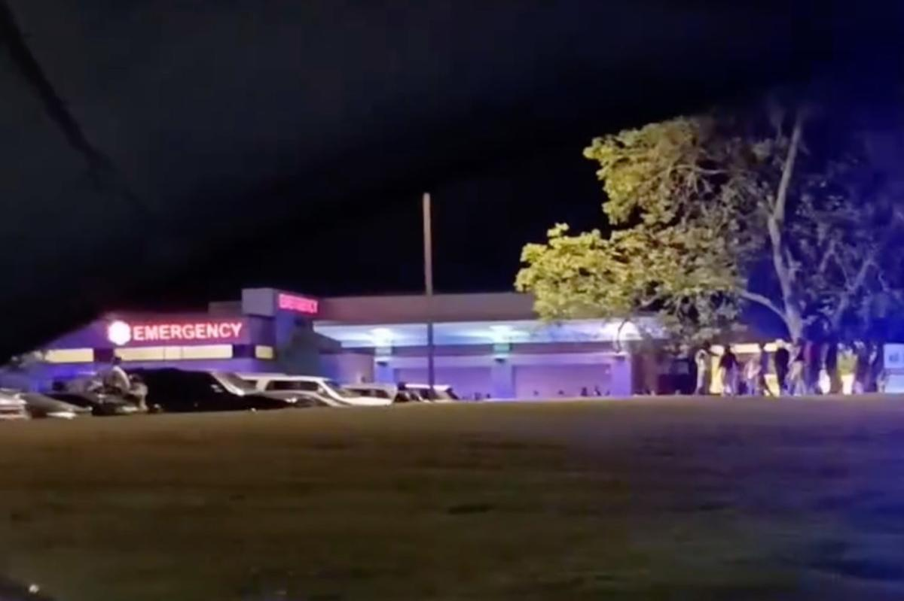
October 04, 2026
DEVELOPING: 2 Dead, 35 Hurt in Mass Shooting at Georgia Homecoming Block Party
Gunfire erupted around 1:25 a.m. Sunday at a homecoming block party in Vienna, Ga., where more than 1,000 people had gathered. Two men, 20 and 23, were killed. The GBI is investigating.
READ THE STORY →October 04, 2026
Yemen's Government Announces Major Offensive Against Houthis — Shipping Lanes at Risk
Yemen's Saudi-backed government has declared a major military operation to retake territory from the Iran-aligned Houthis, escalating a conflict that threatens Red Sea shipping and global energy routes.
READ THE STORY →October 04, 2026
12-Year-Old Killed, 4 Injured in Baltimore Shooting Over Parking-Spot Dispute
Gunfire erupted at Leon Day Park during a youth football homecoming game Saturday evening after an argument over a parking spot. A 12-year-old girl was killed and four others wounded; police are searching for at least two suspects.
READ THE STORY →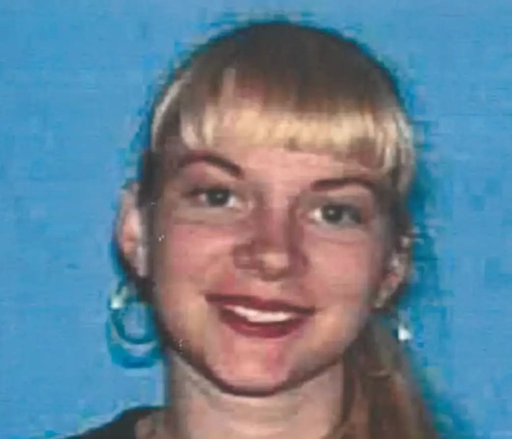
October 04, 2026
20-Year Cold Case Cracked: Husband Arrested in 2006 Killing of Wife Found Under Big Bear Home
Jill Maiorca, 29, was reported missing in 2007 — believed murdered in November 2006. Her remains were found in a Big Bear crawlspace in 2020, unidentified for three years. Her former husband now faces murder charges.
READ THE STORY →October 04, 2026
Murder suspect shot by Georgia deputies after PIT maneuver ends Turner County chase
A statewide be-on-the-lookout alert sent Turner County deputies after a Henry County murder suspect Saturday afternoon. A PIT maneuver ended the chase — then the suspect allegedly fired on officers, who returned fire. He survived. The GBI is investigating.
READ THE STORY →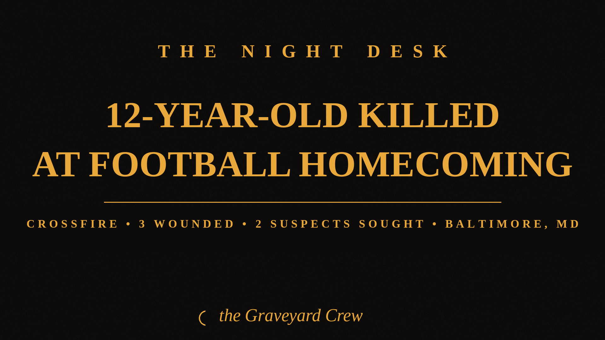
October 04, 2026
12-year-old girl killed in crossfire as gunmen open fire at youth football homecoming in Baltimore
A 12-year-old girl was killed and three adults wounded Saturday evening when two men opened fire near a youth football homecoming event at Leon Day Park. Police are searching for at least two suspects; no arrests have been announced.
READ THE STORY →October 04, 2026
US Marine, 20, arrested in Okinawa on suspicion of killing local woman at hotel
Lance Cpl. Devin Jacob Ballad is suspected of killing 39-year-old Anna Yagi at the Naminoue Crystal Hotel in Okinawa. He denies the allegations; the case is expected to be referred to Japanese prosecutors within 48 hours.
READ THE STORY →October 04, 2026
Two Young People Shot Dead at Packed Open Mic Night in Northridge — Gunman Still at Large
Gunfire erupted inside the Artist Lounge during a packed event near Cal State Northridge late Friday night. Two victims, ages 18 to 25, were killed at the scene. The shooter is still at large.
READ THE STORY →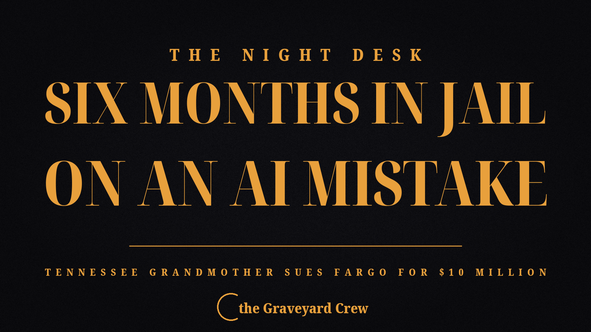
October 03, 2026
AI Got It Wrong, She Spent Six Months in Jail: TN Grandmother Sues Fargo for $10M Over Face-Match Arrest
Angela Lipps, 50, was babysitting her neighbor's kids in Elizabethton when U.S. Marshals took her at gunpoint over bank thefts in a state she'd never visited. The charges were dismissed. Now she's suing.
READ THE STORY →October 03, 2026
BREAKING: Medical plane with 6 aboard vanishes near Nantucket — debris found tonight
A Gulfstream air ambulance flying from Bermuda to Boston went dark over the Atlantic early Saturday. Coast Guard crews found a confirmed debris field off Nantucket Saturday night — and the search for six people continues into the night.
READ THE STORY →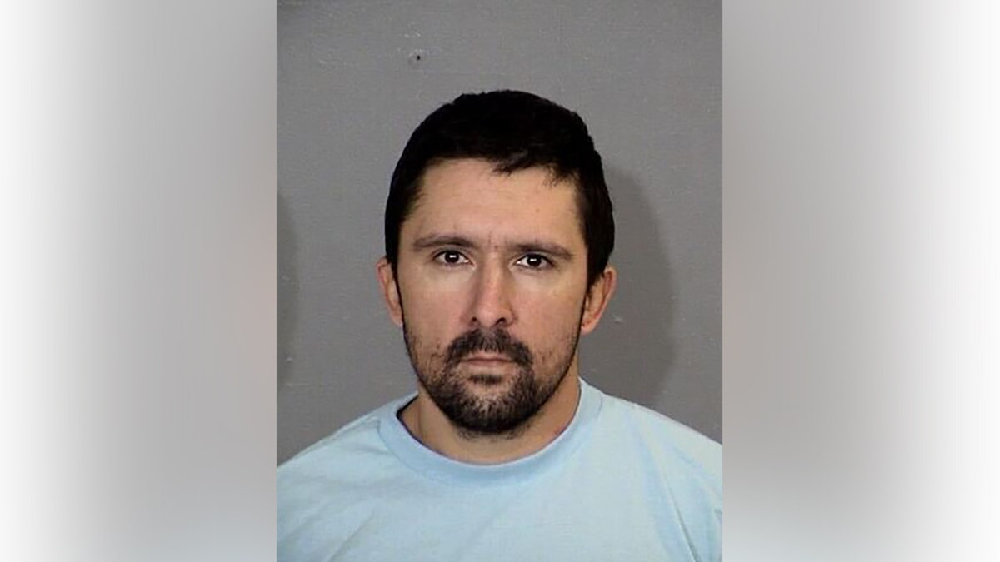
October 03, 2026
Luke Daley — Once Questioned in the Nancy Guthrie Case — Booked on Unrelated Weapons and Drug Charges
The man detained in February's SWAT raid is back behind bars. Authorities stress the new charges are unrelated to Nancy Guthrie's disappearance — and eight months on, no suspect has been named.
READ THE STORY →October 03, 2026
Murder by Mistake: Jury Convicts Sheldon Paul in 2019 Killing of Sebastian Avilan-Medina
A jury found Sheldon Paul, 42, guilty of two counts of second-degree murder for ordering two teens to a Middletown apartment in 2019 — retaliation for a burglary the victim never committed.
READ THE STORY →October 03, 2026
Narco kingpin Navpreet Singh deported from Türkiye, sent to 10-day police custody in Delhi
Singh allegedly ran a heroin-and-meth pipeline from Afghanistan to India under the fake identity "Navab Virk" — and Turkish citizenship to go with it. Indian agencies tracked him, unmasked him, and brought him home.
READ THE STORY →October 03, 2026
Midnight shooting in Phoenix: driver shot dead behind the wheel, suspect cornered in nearby apartment
A driver was found shot dead inside his crashed car near 19th and Maryland avenues just after midnight. Police tracked the shooter on foot into a nearby apartment complex and made an arrest.
READ THE STORY →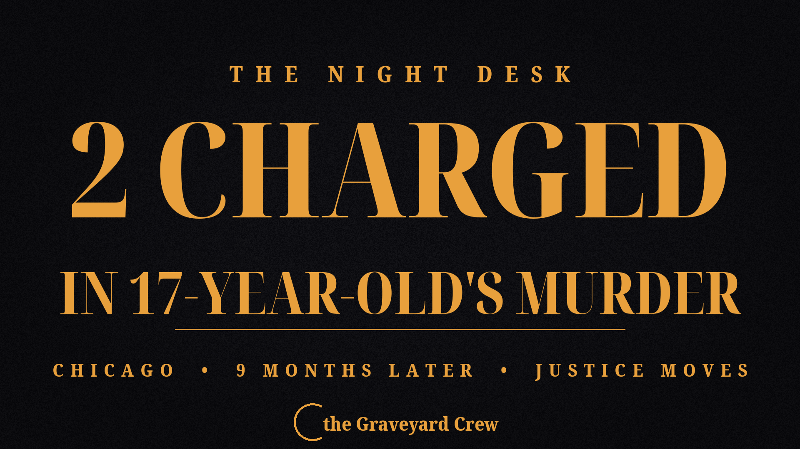
October 03, 2026
2 Teens Charged in January Murder of 17-Year-Old Chicago Girl
Nine months after a 17-year-old girl was shot in the back inside a car on Chicago's West Side, police arrested two teenage suspects Friday — both now face first-degree murder charges.
READ THE STORY →October 03, 2026
Oxnard 8-Car Pileup Driver Turns Himself In, Booked on Two Murder Counts
David Mora, 29, surrendered to Oxnard police Friday night, eight days after a red-light crash at Victoria and Doris avenues killed two men and injured five. He's held on $5 million bail ahead of an Oct. 6 court date.
READ THE STORY →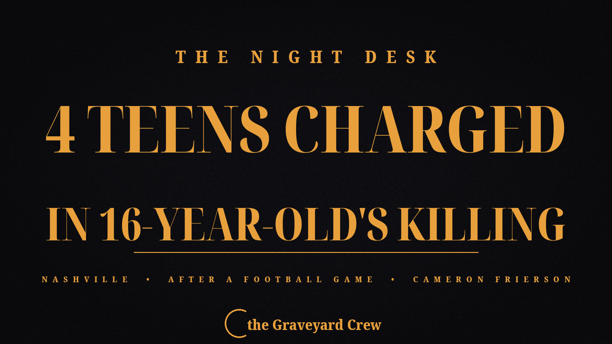
October 03, 2026
Four Teens Charged in Shooting Death of 16-Year-Old Cameron Frierson After Nashville Football Game
Six weeks after 16-year-old Cameron Frierson was shot near Pearl-Cohn High School following a football game, Metro Nashville detectives have arrested four teenagers — ages 16, 17, 17 and 18 — on criminal homicide and conspiracy charges.
READ THE STORY →October 03, 2026
Kentucky Castle CEO Ousted After Lawsuit Claims Hidden Cameras Secretly Filmed Guests
Wes Henderson, the Angel's Envy co-founder who turned The Kentucky Castle into a fairy-tale hotel, was fired as CEO after a sealed lawsuit alleged he secretly filmed guests undressed with hidden cameras.
READ THE STORY →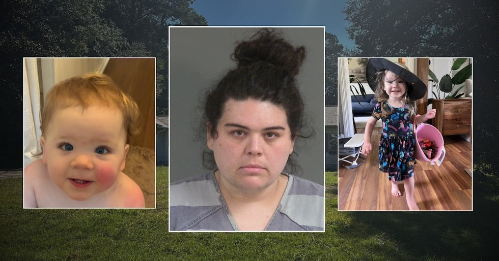
October 03, 2026
SC Mom Charged in Starvation Deaths of Daughters, 2 and 15 Months
Neighbors, family, and the girls' father called police repeatedly about Harlow and Emory Deacon. Deputies visited five times. On Tuesday, the girls were found dead in their Ladson home — and their mother told investigators she couldn't remember the last time she fed them.
READ THE STORY →October 03, 2026
Tennessee's Prisons Chief Resigns After Failed Execution of Christa Pike
Gov. Bill Lee announced Saturday that Department of Correction Commissioner Frank Strada is stepping down this month — days after the state failed to execute Christa Pike by lethal injection, leaving her gravely ill on a ventilator.
READ THE STORY →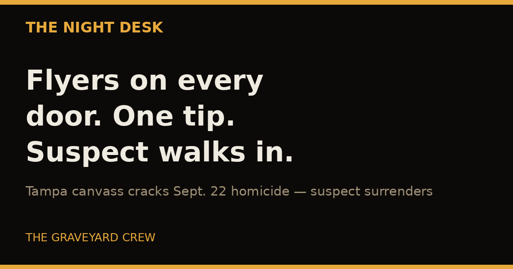
October 03, 2026
Flyer Canvass Cracks Tampa Homicide: Suspect Turns Himself In
Detectives went door to door handing out flyers with a suspect's photo — and one neighbor's tip later, the man accused in a September 22 killing on Nebraska Avenue turned himself in.
READ THE STORY →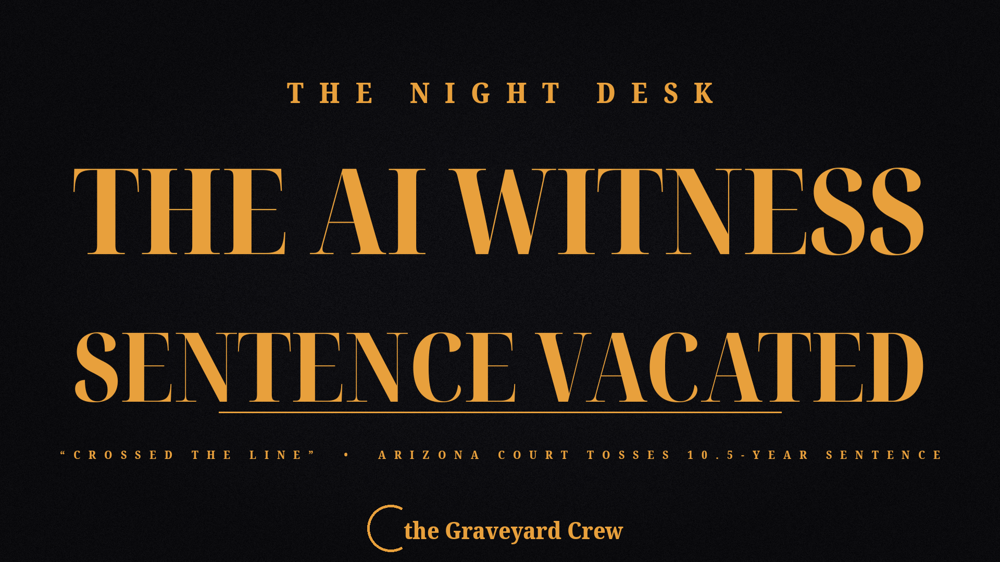
October 03, 2026
Arizona Court Vacates Manslaughter Sentence Over AI Video of Dead Victim
The Arizona Court of Appeals ruled that an AI-generated video of shooting victim Christopher Pelkey — shown before sentencing — "crossed the line," and ordered Gabriel Paul Horcasitas resentenced.
READ THE STORY →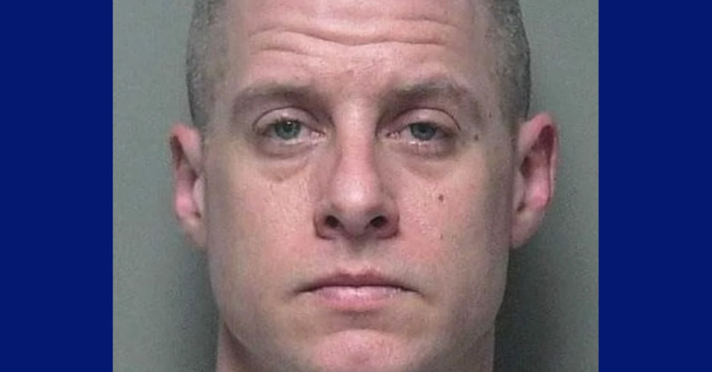
October 03, 2026
'American Idol' alum Caleb Flynn convicted of murdering wife Ashley; sentencing set for Monday
A Miami County jury convicted former worship pastor Caleb Flynn, 40, on all nine counts in the February shooting death of his wife Ashley. He could face life in prison without parole when he's sentenced October 5.
READ THE STORY →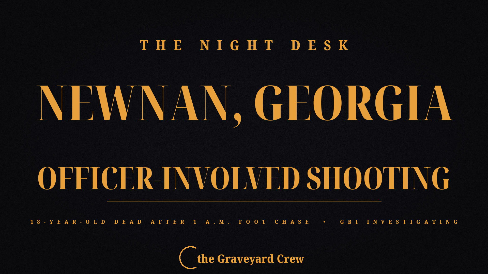
October 03, 2026
18-year-old killed in Newnan, GA officer-involved shooting; GBI investigating
Zadarious Dorsey, 18, was shot and killed by a Newnan police officer around 1 a.m. Saturday after a foot chase. The officer says Dorsey pulled a gun from his waistband after a taser failed. A gun was recovered at the scene; the GBI is conducting an independent investigation.
READ THE STORY →October 03, 2026
Hochul: Cornell rape investigation 'deeply flawed' as AG takes over the case
Gov. Kathy Hochul torched the original Cornell police investigation into the alleged 2024 Chi Phi gang rape at a Friday press conference, revealing Jane Doe told police she was "100% confident" she was raped — a transcript prosecutors say they never received. AG Letitia James is now running the case as special prosecutor.
READ THE STORY →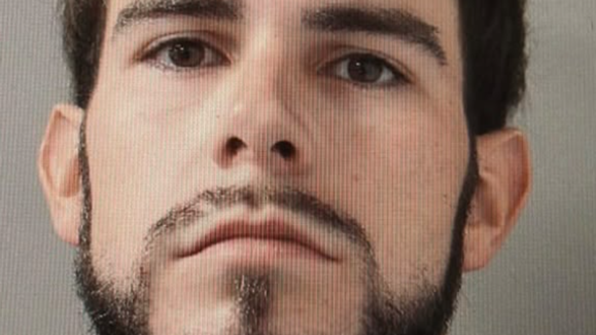
October 03, 2026
Texas Blue Alert Ends With Arrest: Deputy Shot, Patrol SUV Stolen in Channelview
Chase Layne Patin, 25, faces four counts of aggravated assault of a public servant after allegedly shooting Deputy Javier Perez-Garcia and stealing his marked patrol SUV in Channelview, Texas. A statewide Blue Alert and an overnight door-to-door manhunt ended with Patin found hiding in a backyard shed.
READ THE STORY →October 03, 2026
Bodycam Released: The McDonald's Moment Cops Knew They Had Luigi Mangione
A Manhattan judge unsealed the Altoona bodycam trove after CNN's petition — showing the "That's 100% him" moment, the fake Mark Rosario ID, and officers grinning as they pulled a gun magazine from his backpack.
READ THE STORY →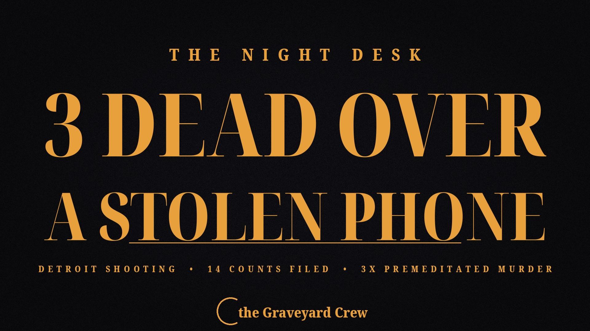
October 03, 2026
Detroit Mass Shooting: 14 Counts Filed After 3 Killed, 4 Wounded Over a Stolen Phone
Wayne County Prosecutor Kym Worthy says last weekend's Prest Street after-hours shooting started over a missing cell phone — and the address had already been on police radar.
READ THE STORY →October 03, 2026
UAE Calls FlyDubai Cockpit Attack an "Attempted Terrorist Attack"
The UAE prosecutor general said Saturday the flydubai co-pilot who attacked his captain with a crash axe attempted a terrorist attack — the first official terror designation in the FZ1073 investigation.
READ THE STORY →
October 03, 2026
Triple Shooting in Wilmington Kills 18-Year-Old, Wounds Two Others
Jabez Moore, 18, was killed in a triple shooting Thursday afternoon in Wilmington's Baynard Village neighborhood. Two other victims are stable. No arrests yet as gun violence in the city climbs.
READ THE STORY →
October 03, 2026
Bus driver shot dead over a missed stop; Culver City suspends all weekend service
A Culver CityBus driver was shot and killed Thursday evening in Mar Vista after a passenger argued with him over a missed stop. The suspect — who fled on a bicycle from the bus's front rack — was arrested Friday. The city has suspended its entire bus system for the weekend so transit workers can grieve.
READ THE STORY →
October 03, 2026
PIT maneuver ends I-20 chase; two wanted suspects in custody
A Tuesday-night pursuit across metro Atlanta ended when APD officers used a PIT maneuver to stop a car carrying Rickora Walker, 23 — wanted in Metro Nashville on an attempted second-degree murder charge after failing to appear in court — and driver Joshua Brownlee, 20, wanted on felony theft charges.
READ THE STORY →
October 03, 2026
Arrest Made in 2006 Franklin Double Homicide of Blake and Chynna Dickus
More than 20 years after a 10-year-old boy and his stepmother were stabbed to death in their Franklin, Indiana home, the Johnson County Prosecutor's Office announced two murder charges against Michael Jerome James, 35 — who was 14 at the time of the killings.
READ THE STORY →
October 03, 2026
Caught by a rerun — 29-year Des Moines hit-and-run cold case cracked by an America's Most Wanted episode from 1998
Gerardo Garcia-Michel fled Iowa in 1997 after police say he struck and killed 64-year-old Leslie Ruby. A Crime Stoppers tip — triggered by a rerun of the case's 1998 America's Most Wanted episode — led U.S. Marshals to his neighbor's doorstep in New Jersey.
READ THE STORY →
October 03, 2026
Warrant Issued for Tennessee Teen in Richmond, Indiana Homicide
Joshua Wade Smith, 18, of Knoxville, was charged Friday night with murder and three counts of attempted murder in a Sept. 28 shooting that left 18-year-old Cecelia Rayne Hargrove dead and two juveniles wounded.
READ THE STORY →
October 02, 2026
28 Years Later — Arrest in the 1998 Cold-Case Murder of Georgia Mom Christy Dawn Myers
Georgia investigators say continued forensic testing identified James Lawrence III, 47, in the September 1998 stabbing death of 20-year-old Christy Dawn Myers, whose body was found beside her car on a Coffee County highway.
READ THE STORY →
October 02, 2026
Mistaken Identity: New Dad of Triplets Kidnapped from a Temple — Manhunt On for Three Suspects
Avtar Singh, 57, was taken in broad daylight from a Sikh temple in Tracy, California — but investigators say the three indicted men grabbed the wrong person. Now Alberto Alencastro, Alfonso Segura, and Barnabe Segura are at large and considered dangerous.
READ THE STORY →
October 02, 2026
FBI's First Cyber Fugitive on the Ten Most Wanted List Is Back on U.S. Soil
Anibal Alexander Canelon Aguirre — a.k.a. "Prometheus" and "The Engineer" — appeared in a Nebraska courtroom Friday to face charges over a multimillion-dollar ATM jackpotting scheme allegedly funding Tren de Aragua.
READ THE STORY →
October 02, 2026
911 Dispatch Reveals Ken Urker's Final Hours
Page Six obtained the 911 dispatch call: Ken Urker's sister-in-law told dispatch he was in a "dark place," had made threats to commit suicide, and owned a gun. The official cause of death remains unreleased.
READ THE STORY →
October 02, 2026
Ex-Congressman David Rivera Sentenced to 10 Years for Secretly Lobbying for Venezuela
Former U.S. Rep. David Rivera got a decade in federal prison Friday for taking $20 million from Venezuela's state oil company to quietly lobby Washington — and never registering as a foreign agent.
READ THE STORY →
October 02, 2026
Four Teens Arrested in Fatal Shooting of 16-Year-Old After Nashville Football Game
Nashville police have arrested four teens — ages 16, 16, 17, and 18 — in the August drive-by killing of Cameron Frierson, 16, who was gunned down walking home from a high school football game.
READ THE STORY →
October 02, 2026
Ken Urker's Autopsy Is Complete — But the Wait for Answers Continues
The Lafourche Parish Coroner's Office says there is "no definitive cause of death" yet. Toxicology results are still pending.
READ THE STORY →
October 02, 2026
73 Days of Freedom, Then Back to Prison: Sara Polston Charged With Voting While Ineligible
Polston served 73 days of an 8-year DUI sentence before going home on a GPS ankle monitor. On October 1 she was hauled back — now facing two felony counts of voting while ineligible.
READ THE STORY →
October 02, 2026
Deputy Killer Sentenced: Life Without Parole for the Murder of Ryan Clinkunbroomer
Kevin Cataneo Salazar will die in prison for the 2023 ambush killing of LA County Deputy Ryan Clinkunbroomer — a fourth-generation deputy engaged just four days before he was gunned down at a Palmdale stoplight.
READ THE STORY →
October 02, 2026
DOE Electrical Engineer Arrested on Federal Charge of Trying to Aid the Houthis
Ashton Hamed Ellaboudy, 51, allegedly bought explosive precursors and drone parts, traveled through Oman toward Yemen, and advised an FBI informant posing as a Houthi "Colonel." He faces up to 20 years.
READ THE STORY →
October 02, 2026
AG Letitia James Takes Over Cornell Frat Gang-Rape Probe
Governor Hochul stripped the Tompkins County DA of the case. Seven Chi Phi brothers are accused of drugging and raping a student in October 2024; Cornell expelled two.
READ THE STORY →
October 02, 2026
Botched Execution in Tennessee: Two Doses Failed, Governor Halts All Executions Through 2026
Christa Pike's execution went wrong when two doses of pentobarbital failed. She survived — breathing, in critical condition — and the governor paused every execution in the state.
READ THE STORY →
October 01, 2026
Ken Urker, Fiancé of Gypsy Rose Blanchard, Found Dead on His Birthday in Louisiana
Urker was found unresponsive after a family member checked on him when Gypsy's "happy birthday" text went unanswered. The cause of death was not yet known; the story was developing.
READ THE STORY →
October 01, 2026
Rick Ross Arrested in Miami on Domestic Battery Charges
The rapper faces a felony strangulation charge and a misdemeanor count, was released on $6,000 bond, and is due back in court October 22.
READ THE STORY →